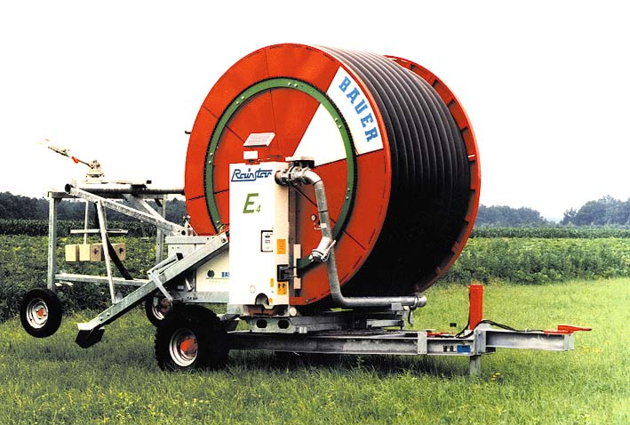

Menyiapkan model 3D…
Explorator sparepart interaktif • sketsa 3D dari katalog Ersatzeilliste 827 9909

Menyiapkan model 3D…
Sumber: PDF Ersatzeilliste Bauer Rainstar E (E1–E5) 827 9909 VI-2011 & spreadsheet ABC INDIKATOR MATERIAL (Sheet1/Sheet2).